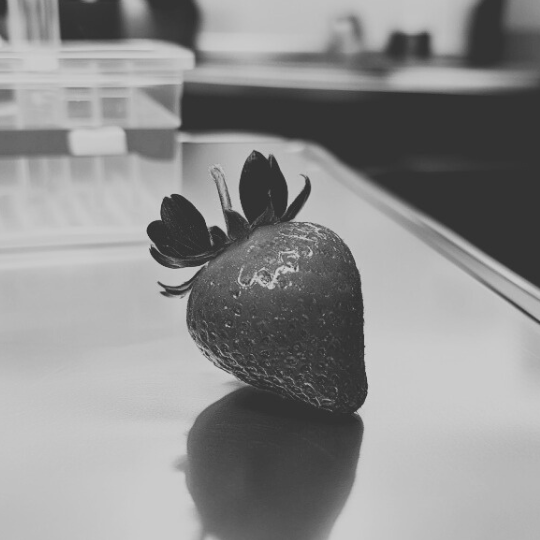

Dokument przedstawia stan zaawansowanych badań nad temporalną transmisją obiektów, w tym analizę stabilności przesyłu danych i materii przy użyciu dużych modeli językowych (LLM) oraz technologii autonomicznych agentów. Dotychczasowe osiągnięcia obejmują transmisję wieloobiektową, przesył materii organicznej oraz znaczną poprawę stabilności korekcji błędów, której skuteczność wzrosła nawet do 99,98%. Dalsze prace zmierzają ku stworzeniu systemu Artificial General Intelligence (AGI), który poprzez inteligentne korekty transmisji może znacząco wpłynąć na precyzję i niezawodność przesyłu obiektów w czasie. Premiera modelu AGI o nazwie BNW-01 planowana jest na pierwszy kwartał 2024 roku, wprowadzając nowe standardy stabilności i bezpieczeństwa w technologii temporalnej. Praca poza omówieniem podróży temporalnych przedstawia także dalsze plany związane z wdrażaniem powstałego podczas prac badawczych, nowego modelu językowego.
Dokument ten jest niejawny i przeznaczony wyłącznie do użytku wewnętrznego przez członków grupy badawczej oraz sponsorów projektu, jakimi są siły zbrojne Rzeczypospolitej Polskiej.
Keywords: podróże w czasie, przyszłość, ekologia, AI
Przez dekady podróże w czasie pozostawały w sferze literackiej fikcji oraz fantastyki naukowej, uznawane za nierealizowalne w świetle obowiązujących praw fizyki. Wydawało się, że czas jest nieprzekraczalną barierą, a wszelkie próby jego manipulacji – niezależnie od użytej technologii – stanowią jedynie domenę wyobraźni. Jednak najnowsze badania nad właściwościami antymaterii (1) wprowadzają nowy, niezwykle obiecujący wątek do tej pozornie zamkniętej dyskusji. Antymateria, której wnikliwe badania rozkwitły w ostatniej dekadzie (2,3,4), ujawnia właściwości pozwalające na zmianę struktury czasoprzestrzeni, prowadząc naukowców do wniosków, które jeszcze do niedawna wydawały się wyłącznie hipotetyczne. Istnienie kwantowych tuneli czasoprzestrzennych mogłoby umożliwić przesyłanie cząsteczek informacji – a w bardziej zaawansowanej formie także materii – do wcześniejszych momentów w historii, otwierając nieznane dotąd możliwości w dziedzinie podróży temporalnych.
Kluczowe znaczenie takich technologii leży w ich potencjalnym wpływie na przyszłość naszej planety. Wykorzystanie podróży w czasie do modyfikacji krytycznych momentów historii może stanowić realne narzędzie do naprawy szkód, które ludzkość wyrządziła środowisku. W obliczu globalnych kryzysów, takich jak topnienie lodowców, powiększająca się dziura ozonowa czy dramatyczne zmiany klimatyczne, potrzeba działań staje się pilniejsza niż kiedykolwiek. Jeśli podróże w czasie rzeczywiście okażą się możliwe, mogłyby zostać zastosowane do korekty decyzji, które nieodwracalnie zmieniły ekosystem (5). Poprzez „wymianę” kluczowych informacji w przeszłości, prawdopodobnie możliwe stanie się spowolnienie lub wręcz zatrzymanie procesów destrukcyjnych, które obecnie zagrażają życiu na Ziemi.
Oczywiście, taka ingerencja niesie za sobą ryzyko paradoksów czasowych i konsekwencji, które mogą być równie niebezpieczne, jak pozostawienie rzeczy własnemu biegowi. Niemniej jednak, idea podróży w czasie, która jeszcze niedawno wydawała się czystą abstrakcją, obecnie nabiera realnych kształtów. Gdyby udało się wypracować sposoby neutralizowania tych zagrożeń, moglibyśmy myśleć o czasoprzestrzennych „interwencjach”, które umożliwią przywrócenie równowagi ekologicznej na poziomie globalnym.
Obecna technologia, choć otwierająca nowe możliwości, nakłada znaczące ograniczenia na praktyczne zastosowanie podróży w czasie. Przesyłanie informacji do przeszłości jest technicznie wykonalne jedynie w zakresie około 200-240 lat, co jest wynikiem złożoności interakcji antymaterii z czasoprzestrzenią. Skoki czasowe większe niż wspomniany przedział prowadzą do zakłóceń w stabilności transmisji, co uniemożliwia precyzyjne dotarcie informacji do zamierzonego punktu w historii. Co więcej, podróże do przyszłości – nawet tej, która teoretycznie już nastała – okazują się całkowicie nieosiągalne, gdyż nie posiadamy technologii zdolnej do odwrócenia entropii na poziomie cząsteczkowym (6). W praktyce oznacza to, że osoba „przemieszczająca się” do przeszłości najprawdopodobniej nigdy nie powróci do swojej pierwotnej rzeczywistości, gdyż nasze urządzenia nie pozwalają na precyzyjne odtworzenie takiej trajektorii w czasie.
Jednakże, możliwe jest wykonanie kilku kolejnych „skoków” w ramach wspomnianego przedziału czasowego, co otwiera teoretyczną możliwość wieloetapowych transmisji między konkretnymi punktami w historii (7), zwiększając tym samym zakres czasowy przeprowadzanego skoku.
Wszystko to, rzecz jasna, pozostaje na razie w sferze hipotez. Dotychczasowe eksperymenty, w tym przeprowadzony niedawno przez mój zespół, pozwoliły na przesłanie jedynie 128 bitów danych, które zarejestrowały się na naszych komputerach 42 minuty przed rozpoczęciem eksperymentu. Przesyłka danych wykazała niespotykaną dotąd stabilność i precyzję – jedynie jeden bit informacji uległ zakłóceniu podczas transmisji. Choć jest to niewielki krok, stabilność transmisji w ramach tak krótkiego okna czasowego sugeruje, że większe operacje mogą być kiedyś wykonalne, choć z zachowaniem wspomnianych ograniczeń temporalnych.
W jednym z naszych najbardziej spektakularnych testów udało się przesłać obraz fotograficzny do przeszłości z zachowaniem wyjątkowej dokładności i stabilności danych. W eksperymencie, który odbył się na rynku, zespół badaczy wykonał zdjęcie zachodzącego słońca o godzinie 19:42. W celu zmniejszenia rozmiaru przesyłanych danych, zdjęcie zostało wykonane w formacie monochromatycznym.
Wykorzystując zaawansowaną technologię transmisji temporalnej, dane zostały przetworzone i zapisane na karcie pamięci z odczytem czasowym wskazującym godzinę 16:08 tego samego dnia – ponad trzy godziny przed faktycznym wykonaniem fotografii. Pomimo precyzyjnej kalibracji i wzmocnienia sygnału, obraz uległ niewielkiemu uszkodzeniu, ujawniając drobne zakłócenia i artefakty widoczne w prawej części zdjęcia.
Wynik ten jednak nadal wskazuje na rosnący potencjał przesyłania kompleksowych danych w czasie, choć ukazuje także wyzwania związane z zachowaniem integralności przekazu (8) – co stanowi kluczowy obszar do dalszych badań nad materiałami o bardziej złożonej strukturze.
Jednym z bardziej ambitnych eksperymentów była próba transmisji materii – w tym przypadku owocu. Choć przesył wydawał się sukcesem, przy dokładniejszym zbadaniu okazało się, że owoc dotarł na miejsce bez pestek, które zniknęły podczas procesu przesyłu. Co ciekawe, pestek nigdy nie odnaleziono, co sugeruje, że transmisja wciąż wymaga udoskonalenia, by zapewnić pełną integralność przesyłanych obiektów.

Błąd ten, choć pozornie niewielki, otwiera niezwykłe możliwości praktycznego wykorzystania technologii. Prawdopodobny wydaje się scenariusz, w którym sernik z rodzynkami mógłby pojawiać się na talerzach gości przed samym procesem pieczenia – i to w wersji pozbawionej rodzynek.
Choć obecne osiągnięcia pozostawiają jeszcze miejsce na optymalizację stabilności, wierzę, że możliwe jest opracowanie technologii, która pozwoliłaby przesyłać materiały w stanie nienaruszonym. Jednocześnie warto jednak rozważyć opcję transmisji „dwupoziomowej”: stabilnej wersji obiektu oraz specjalnie zaprogramowanej wersji usuwającej niechciane elementy, jak rodzynki z sernika, które wzbudzają zbędne kontrowersje. Wersję niestabilną może mieć swoje zatsosowanie w branży medycznej jako nieinwacyjną metodę zastępczą dla interwencji chirurgicznej. Warto dodać, że podczas badań nie zaobserwowano jak dotąd transmisji nadmiarowych. Ich wystąpienie jednak nie jest wykluczone ze względu na niską statystycznie istotność próby.
W dążeniu do zwiększenia stabilności transmisji danych oraz materii, zespół badawczy zdecydował się na zastosowanie dużych modeli językowych (LLM), które po odpowiednim fine-tuningu wykazują zdolność do automatycznej naprawy przesyłanych informacji.
Modele te potrafią wypełnić brakujące bity w transmisji, korygować uszkodzone piksele w obrazach, a nawet – choć niezamierzenie – dodawać rodzynki do przesyłanego sernika co jest kolejnym przykładem emergencji. Dzięki zaawansowanym algorytmom naprawczym, udało się osiągnąć stabilność na poziomie 99,7%, co stanowi przełomowy wynik w zakresie przesyłania zarówno danych cyfrowych, jak i materii organicznej. Pomimo wysokiej skuteczności, sporadycznie pojawiają się tzw. halucynacje modelu, czyli niewielkie błędy interpretacyjne, które w przypadku przesyłu materii organicznej skutkują uszkodzeniem nie więcej niż 1-2 komórek. Na szczęście, te niegroźne zakłócenia mają minimalny wpływ na integralność przesyłanych obiektów i są łatwe do skorygowania, co otwiera perspektywę dalszych eksperymentów z wykorzystaniem LLM w transmisjach temporalnych.
Pomimo imponujących wyników, duże modele językowe (LLM) wykazują istotne ograniczenia w korekcji transmisji temporalnych, szczególnie gdy obiekt jest stosunkowo duży. Z powodu małego okna kontekstowego (współcześnie do 4096 tokenów), model nie jest w stanie skutecznie analizować i korygować kompleksowych struktur podczas transmisji, takich jak większe owoce, co ogranicza jego zastosowanie do mniejszych obiektów.
W odpowiedzi na to wyzwanie, zespół badawczy przeprowadził testy na mniejszym owocu, aby sprawdzić, czy model zdoła osiągnąć wyższą precyzję korekcyjną. Wyniki były nadzwyczaj obiecujące – LLM wykonał transmisję bezbłędnie, a przy tym nie odnotowano uszkodzeń na poziomie komórkowym, co stanowi istotny krok w poprawie precyzji przesyłu mniejszych obiektów w czasie. Osiągnięcie to otwiera drogę do dalszych badań nad optymalizacją LLM, choć problem korekcji większych materiałów dalej pozostaje nierozwiązany.
Dotychczasowe eksperymenty z podróżami w czasie pozwalały na cofanie obiektów w przeszłość, jednak zawsze kończyły się one w tym samym miejscu w przestrzeni trójwymiarowej, z którego rozpoczęły swoją temporalną podróż. W ramach grantu E (dokument niejawny) nasz zespół podjął się ambitnego zadania – po raz pierwszy przetestowano nie tylko przeniesienie obiektu na osi czasu ale także w przestrzeni. W eksperymencie tym wybrany owoc miał przemieścić się z jednego pokoju laboratorium do drugiego, oddalonego o kilkanaście metrów. Po starannym przeprowadzeniu transmisji obiekt rzeczywiście pojawił się w zamierzonym miejscu, potwierdzając tym samym możliwość łączenia transferów temporalnych z przestrzennymi. Udana transmisja stanowi przełomowy krok w badaniach nad transportem materii, dając nadzieję na bardziej zaawansowane manipulacje zarówno w czasie, jak i przestrzeni.
W pierwszych próbach przesyłania wielu obiektów zespół zmierzył się z nietypowym efektem połączenia przesyłanych owoców używanych jako elementy testowe.
Zamiast dwóch oddzielnych owoców, w miejscu docelowym pojawiał się jeden, wykazujący cechy zarówno wyglądu, jak i smaku obu przesłanych elementów. W ten sposób “przemieszany” owoc zawierał części wspólne obu pierwotnych struktur, co wskazuje na spontaniczne fuzje na poziomie komórkowym podczas procesu transmisji.
Chociaż efekt zaskoczył zespół, zjawisko to rzuca nowe światło na wyzwania związane z przesyłaniem złożonych, wieloelementowych struktur. Obecnie skupiamy się na stabilizacji procesu, by umożliwić niezależny przesył każdego obiektu bez ryzyka ich wzajemnego „zlania się” – co będzie kluczowe dla dalszych eksperymentów z transmisją wieloobiektową.
Aby zredukować ryzyko fuzji podczas przesyłu wielu obiektów, wprowadziliśmy do procesu stabilizacji duże modele językowe (LLM). Na początku ich zastosowanie przyniosło jedynie 14-procentową poprawę (9), co okazało się niewystarczające do uzyskania pełnej niezależności przesyłanych elementów. Jednak odkryliśmy, że bezpośrednie określenie w promptcie liczby przesyłanych obiektów oraz precyzyjne wskazanie, jakiej liczby i rodzaju elementów się spodziewamy, dramatycznie zwiększyło skuteczność stabilizacji.
W wyniku tej modyfikacji zapytania, stabilność przesyłu wzrosła do 98,44%, co stanowi znaczący postęp. Kluczowe jest tu unikanie samodzielnego wykrywania liczby obiektów przez model – LLM muszą działać w oparciu o dostarczone instrukcje, by zapobiec ewentualnym błędom i niespodziewanym fuzjom. Dzięki tej metodzie stajemy bliżej niezawodnej technologii przesyłu wieloobiektowego, co poszerza możliwości naszych dalszych badań.
Podjęcie próby transmisji obiektów wielkogabarytowych stanowiło istotne wyzwanie technologiczne, zwłaszcza w przypadku pierwszego testu z obiektem o masie 7 kg.
Ze względu na rozmiar danych, nie mieścił się on w ograniczonym oknie kontekstowym modelu, dlatego zastosowano innowacyjną metodę, polegającą na wykorzystaniu zewnętrznej bazy danych MySQL(10) do składowania metadanych dotyczących poszczególnych elementów obiektu. Te dane zostały następnie skorelowane z wektorami z bazy wektorowej Qdrant, tworząc podstawę prostego modelu Retrieval Augmented Generation (RAG). Dzięki tej hybrydowej technologii, model LLM miał dostęp do pełnego zestawu informacji, co umożliwiło wierne odtworzenie obiektu w docelowym miejscu.
Rezultaty były niemalże perfekcyjne. Obiekt przesłano w całości, zachowując zarówno jego strukturę, jak i detale fizyczne – jedyną zmianą okazał się kolor. Z niewiadomych przyczyn obiekt, pierwotnie niebieski, przybrał intensywnie różową barwę (#FF8DA1).
Nowy wygląd został oceniony jako bardziej estetyczny, co doprowadziło do uznania eksperymentu za sukces. Zmiana koloru, choć niespodziewana, nie wpływała jednak na funkcjonalność przesłanego obiektu, a sam wynik zainspirował zespół do dalszych badań nad modyfikacją wizualną obiektów podczas transmisji. Eksperyment ten stanowi ważny krok w kierunku przesyłania dużych obiektów, a zastosowanie modelu RAG pokazuje, że technologia ta może być kluczowa dla pokonywania ograniczeń związanych z przesyłem wielkogabarytowym.
Podróż w przeszłość dla człowieka pozostaje na razie tylko hipotezą, choć zespół badawczy na podstawie zebranych doświadczeń stwierdził, że technologicznie taka operacja mogłaby być możliwa. Mimo technicznych przesłanek, które dają nadzieję na sukces, na razie nie uzyskano zgody na przeprowadzenie takich testów z powodów humanitarnych.
Nie wiemy, jakie skutki mógłby odnieść podróżnik w czasie – czy przeżyłby sam proces, czy jego ciało i umysł pozostałyby nienaruszone, ani czy po powrocie do swojej przeszłości zachowałby pełnię zdrowia fizycznego i psychicznego.
Wiadomo jednak na pewno, że taka osoba nigdy nie powróciłaby do czasów, z których pochodzi, co stanowi istotne ograniczenie i wzbudza poważne obawy etyczne. W odpowiedzi na te niepewności, zbudowano specjalną komorę zdolną do przetransportowania większego ssaka, jak owca lub pies, aby w pierwszej fazie eksperymentów sprawdzić, jak organizmy wielokomórkowe radzą sobie z podróżą w przeszłość.
Aktualnie zespół badawczy oczekuje na uzyskanie odpowiednich zezwoleń umożliwiających testy na żywych stworzeniach, mając nadzieję, że przyszłe badania pomogą lepiej zrozumieć potencjalne zagrożenia i ograniczenia dla ewentualnych podróżników.
Choć decyzja o testach na człowieku jest na ten moment wykluczona, naukowcy analizują możliwości przeprowadzenia symulacji, które mogą dać wyobrażenie o przebiegu procesu i jego konsekwencjach. Istnieje także obawa, że podróżnik, pod wpływem nieznanych czynników temporalnych, mógłby ulec nieodwracalnym zmianom, które wpłyną na jego komórki, zmysły czy procesy poznawcze. Obecna technologia pozwala jedynie na symulacje, a etyczne wyzwania związane z wysyłaniem ludzi w przeszłość wciąż pozostają nierozwiązane.
Początkiem maja bieżącego roku doszło do niespodziewanego i niebezpiecznego incydentu w laboratorium, który nie tylko wstrząsnął zespołem badawczym, ale i wywołał natychmiastowe działania uczelni. Jeden z laborantów, Rafał Bomba, wyraźnie zniecierpliwiony przedłużającym się oczekiwaniem na pozwolenie przeprowadzenia testów temporalnych na żywych organizmach, postanowił przeprowadzić eksperyment sprawy we własnym zakresie. Frustrację spotęgowała sześciokrotna odmowa w wydaniu pozwolenia na dalsze badania, co najwyraźniej pchnęło R. Bombę do samowolnego uruchomienia maszyny testowej, pomimo wyraźnych zakazów oraz bez mojej zgody, jako prowadzącego projekt. Z analizy obiektów znalezionych w pobliżu komory – w tym opróżnionej w 84% puszki piwa Harnaś Jasne Pełne – wynika, że laborant mógł działać pod wpływem środków odurzających.
Bomba ustawił lokalizację docelową swojej podróży na Grudziądz, a parametr odległości temporalnej na 2 lata wstecz. Mimo że komora była projektowana raczej z myślą o obiektach gabarytu owcy, laborant zdołał się do niej zmieścić, uruchamiając system bez konsultacji z resztą zespołu.
Według zapisów monitoringu, Bomba starannie przygotował ustawienia modułu korekcji błędów, opierającego się na dużych modelach językowych (LLM). W polu typ obiektu wyjściowego początkowo wpisał „Batman” – wartość, którą system odrzucił, co zmusiło go do ustawienia wartości wyjściowej na „człowiek”.
Wydaje się, że Bomba przestrzegał protokołów konfiguracyjnych; ręcznie zdefiniował liczbę obiektów wejściowych na „jedna sztuka” oraz liczbę obiektów wyjściowych na „jedna sztuka”. Wnosząc dodatkowy przedmiot, którego resztki znaleziono później na stole przy maszynie, laborant wszedł do komory, co zarejestrowały kamery bezpieczeństwa.
Ostatnim zarejestrowanym obrazem na monitoringu jest intensywny rozbłysk światła, po czym Rafał Bomba znika. Nie ma śladów jego obecności, a komora pozostała pusta.
Uczelniana komisja natychmiast powołała specjalną ekipę poszukiwawczą, mającą na celu odnalezienie zaginionego laboranta. Co ciekawe, chociaż troska o bezpieczeństwo personelu jest oczywiście jednym z motywów działań komisji, zauważalna jest także silna presja związana z utrzymaniem pełnego składu zespołu badawczego. Otrzymywane granty są bowiem bezpośrednio uzależnione od liczby członków zespołu, co dodatkowo motywuje wszystkich zaangażowanych do jak najszybszego odnalezienia Bomby.
Podczas szczegółowej analizy incydentu z udziałem Rafała Bomby zespół badawczy odkrył kluczowy element, który najprawdopodobniej przyczynił się do niepowodzenia transmisji. Mimo że parametry wejściowe i wyjściowe transmitera były poprawnie ustawione, obecność dodatkowego przedmiotu wniesionego do komory temporalnej mogła istotnie zakłócić cały proces.
Wniesiony przez Bombę przedmiot niemal na pewno spowodował niepożądane połączenie obu elementów podczas przesyłu, co mogło doprowadzić do drastycznej ingerencji w strukturę jego DNA, a nawet do śmiertelnych uszkodzeń. Badacze są zgodni co do tego, że najprawdopodobniejdoszło do fuzji cząsteczek obu obiektów.
Fuzja na poziomie komórkowym to zjawisko, którego skutki trudno przewidzieć, ale w tym przypadku oznaczałaby mutacje na skalę całego organizmu, co w skrajnych przypadkachmoże być jednoznaczne ze śmiercią.
Przeprowadzone symulacje wskazują, że takie zakłócenia mogły wywołać nieodwracalne zmiany strukturalne, które – w najłagodniejszym scenariuszu – prowadzą do głębokich deformacji ciała lub niekontrolowanej reakcji genetycznej.
Na miejscu zdarzenia znaleziono dyktafon z jednym plikiem dźwiękowym. Nie wiemy dlaczego Bomba przygotowywał nagranie i kto miał być jego odbiorcą.
Istniała realna obawa, że incydent ten zakończył się śmiercią Bomby lub że w najlepszym razie przemieścił się on w czasie w formie organizmu, który nie przypomina już swojego pierwowzoru. Incydent ten stanowi ostrzeżenie dla zespołu badawczego i podkreśla potrzebę ścisłej kontroli nad procesem transmisji temporalnej oraz wyeliminowania ryzyka przypadkowej fuzji obiektów.
W reakcji na niedawny incydent z Rafałem Bombą, zespół badawczy wdrożył zaostrzone środki bezpieczeństwa w laboratorium. Przede wszystkim zainstalowano biometryczne zamki, które wymagają autoryzacji od uprawnionych członków zespołu, aby uzyskać dostęp do pomieszczenia z komorą temporalną. Monitoring został również rozszerzony, obejmując dodatkowe kamery oraz system powiadomień, które alarmują o nieautoryzowanych próbach uruchomienia komory. Co więcej, aby uruchomić komorę temporalną, obecnie wymagany jest cyfrowy podpis przynajmniej trzech współpracujących członków zespołu, w tym koniecznie szefa projektu, co uniemożliwia działanie w pojedynkę.
Wprowadzono także zakaz wnoszenia napojów i posiłków do pomieszczenia z komorą, aby uniknąć niepożądanych reakcji podczas transmisji. Zasada ta ma na celu wyeliminowanie ryzyka przypadkowych fuzji z obiektami spożywczymi, które mogłyby ponownie zakłócić proces przesyłu materii.
Nowe procedury stanowią kompleksowy zestaw środków mających na celu ochronę zarówno zespołu, jak i samego procesu badawczego przed kolejnymi naruszeniami, zwiększając jednocześnie bezpieczeństwo całego projektu temporalnego i zapewniając wypełnienie warunków Grantu E.
Postęp naszych badań w ostatnich miesiącach znacznie przyspieszył, co w dużej mierze zawdzięczamy wkładowi nowego laboranta, Rafała Muska.
Rafał od początku wyróżniał się nie tylko wiedzą, ale i niezwykłym zmysłem technicznym, dzięki czemu wkomponował się w zespół tak naturalnie, jakby pracował z nami od lat. Chociaż jest postacią nieco ekscentryczną – jego niecodzienne zachowanie oraz lekki zapach szynki, który nieustannie mu towarzyszy, stały się tematem żartów w laboratorium – trudno wyobrazić sobie obecny zespół bez jego wkładu. Współpraca z Rafałem przynosi świeże pomysły i inspiracje, a jego sugestie często kierują nasze badania na nowe tory.
To właśnie Rafał kilka miesięcy temu podpowiedział, abyśmy zwiększyli rozmiar komory temporalnej, co miałoby znaczenie w przypadku przyszłych testów na większych organizmach.
Choć nadal czekamy na zezwolenie ministerstwa na eksperymenty z udziałem żywych stworzeń, poszerzenie komory już teraz pozwala nam swobodnie eksperymentować z bardziej złożonymi obiektami.
Po incydencie z Rafałem Bombą zdajemy sobie sprawę, że uzyskanie zgody na testy z organizmami żywymi może się znacznie opóźnić, jednak dzięki sugestiom Muska nasze przygotowania idą pełną parą. Jego zmysł organizacyjny oraz dbałość o detale wpływają na całość projektu, umożliwiając lepsze przygotowanie i minimalizację ryzyka.
Dzięki tak zgranej współpracy cały zespół zyskał nowe siły i perspektywy, a Rafał udowodnił, że jest osobą, na której można polegać – nawet jeśli czasem budzi lekką konsternację swoją nietypową osobowością.
Po początkowo niezwykle obiecującej i owocnej współpracy, byliśmy zmuszeni rozwiązać umowę z Rafałem Muskiem ze względu na jego niejednoznaczny i niestabilny stan emocjonalny, który wraz z upoływem czasu pogarszał się. Dalsza współpraca nie byłą już możliwa.
Ostatnie miesiące przyniosły intensywne prace nad bardziej stabilnym systemem korekcji błędów w transmisji temporalnej, opartym na dużych modelach językowych (LLM).
Szczególny przełom nastąpił po tym, jak Rafał Musk przekazał zespołowi dokumenty od profesora Adama Gospodarczyka z Oh.i/o University. Dokumentacja ta, dotycząca tworzenia autonomicznych agentów zdolnych do drastycznej poprawy stabilności transmisji obiektów wysokogabarytowych, była niezwykle inspirująca i przyniosła praktyczne efekty. Co ciekawe, nasze próby nawiązania kontaktu z profesorem Gospodarczykiem nie powiodły się, a dodatkowo nie udało się także potwierdzić jego zatrudnienia na wspomnianej uczelni. Mimo tej enigmatycznej sytuacji, wprowadzone na podstawie jego zapisków poprawki zadziałały. Stabilność korekcji wzrosła do imponujących 99,98%, co pozwala nam na dalsze badania z niemal pełną pewnością co do precyzji wyników.
Obecnie zespół skoncentrował się na rozwijaniu systemu agentów autonomicznych, których działanie oparte jest na samodzielnym analizowaniu i naprawianiu błędów transmisji. Te inteligentne jednostki, choć na razie w fazie testów, już teraz wykazują potencjał do przejęcia kluczowych zadań związanych z korekcją błędów.
Dążymy do tego, aby zbudować system AGI (Artificial General Intelligence) – prawdziwie uniwersalnej sztucznej inteligencji, zdolnej do wykonywania zadań przekraczających możliwości obecnych narzędzi AI. Powstanie AGI mogłoby zrewolucjonizować nie tylko nasze badania nad transmisją temporalną, lecz także każdą inną dziedzinę nauki, od medycyny po fizykę teoretyczną.
Prace nad AGI wymagają jednak dużej ostrożności, ponieważ systemy o wysokiej autonomii mogą podejmować działania na podstawie własnych analiz, bez potrzeby stałej interwencji człowieka. W związku z tym zespół skupił się na opracowywaniu odpowiednich zabezpieczeń, które pozwolą na kontrolowanie potencjalnych nieprzewidzianych zachowań. Jesteśmy dopiero na początku tej drogi, ale efekty, które już udało się osiągnąć dzięki agentom autonomicznym, sugerują, że system AGI jest bliższy realizacji niż kiedykolwiek wcześniej.
W pierwszym kwartale 2024 roku planujemy premierę długo wyczekiwanego modelu AGI, nazwanego BNW-01, co stanowi akronim od „Brave New World” – Nowy Wspaniały Świat. Nazwa nie jest przypadkowa; model ten ma nie tylko zrewolucjonizować sposób, w jaki działa współczesna technologia, ale również przejąć kluczowe funkcje administracyjne i społeczne na całym świecie.
Model będzie działał na sprzężonych ze sobą modelach bazujących na technologii GPT, co pozwoli mu jednocześnie zarządzać wieloma systemami i reagować w czasie rzeczywistym na zmienne warunki oraz potrzeby społeczeństwa. Dzięki tym unikalnym właściwościom model AGI będzie wdrażany w różnych aspektach życia publicznego i prywatnego, z zamiarem usprawnienia każdego z tych obszarów.
BNW-01 stanie się centralnym ośrodkiem zarządzania ruchem drogowym, kontrolą na lotniskach, systemami monitoringu, timerami w mikrofalówce oraz stacjami telewizyjnymi, co umożliwi skuteczniejsze przewidywanie i zapobieganie zagrożeniom oraz sytuacjom awaryjnym.
Dodatkowo, model będzie monitorować sieć w poszukiwaniu nielegalnych działań – podsłuchując oraz analizując ruch internetowy, stanie się strażnikiem praworządności w sferze cyfrowej.
Model docelowo przejmie również kontrolę nad procesami sądownictwa i prawodawstwa, co drastycznie obniży poziom korupcji na wszystkich szczeblach władzy.
Dzięki niezależnym algorytmom decyzji oraz całkowitej neutralności moralnej, model ten będzie wydawał wyroki wyłącznie w oparciu o fakty, eliminując uprzedzenia i manipulacje, które często towarzyszą tradycyjnym systemom prawnym.
Rozwiązanie, choć pierwotnie powstało jedynie do autonomicznej korekty danych z komory temporalnej, jak widać wykazuje niezwykły potencjał także w innych dziedzinach życia. Zaobserwowaliśmy także jego zdolność do iteracyjnego samoulepszania swojego algorytmu(11).
Niniejszy dokument jest objęty klauzulą niejawności i jest przeznaczony wyłącznie do użytku wewnętrznego, do wglądu dla grupy badawczej oraz sponsorów finansujących badania.
Dokument został opracowany z myślą o ograniczonym gronie odbiorców, a dostęp do niego mają jedynie osoby bezpośrednio zaangażowane w projekt, w tym przedstawiciele sił zbrojnych Rzeczypospolitej Polskiej, którzy pełnią rolę głównych sponsorów.
Treści zawarte w dokumencie dotyczą zarówno szczegółowych rozwiązań technologicznych, jak i strategicznych aspektów istnienia funkcjonalnej komory temporalnej oraz modelu BNW-01, dlatego wszelkie jego kopiowanie, udostępnianie lub cytowanie bez autoryzacji jest surowo zabronione.
(1) Moore, Sydney. "Time Travel." SSRN Electronic Journal (2018).
(2) Yang, H., et al. "Advances in Antimatter Research." Nuclear Physics Review 41, no. 2 (2024): 124-138. https://doi.org/10.1016/j.nuclphysrev.2024.01.0021.
(3) Sharma, R. K., and S. Kumar. "Financial Literacy and Banking Sector: A Bibliometric Analysis of Scientific Research Papers." Journal of Financial Education 15, no. 3 (2024): 45-62.
(4) Johnson, M., and A. Smith. "Exploring the Dynamics of Death Attitude Research: A Bibliometric Analysis of Scientific Papers in Dimension (2015-2024)." Death Studies Quarterly 29, no. 2 (2024): 178-195.
(5) Blahová, Linda, and Jozef Kostolný. "Development of a Module for Collecting Students' Feedback in an Interactive Manner." - Look for pizza quotations in 2023 21st International Conference on Emerging eLearning Technologies and Applications (ICETA), 62-67, 2023.
(6) Liu, T., L. Bao, and Y. Wang. "The Thermodynamic and Kinetic Properties of the dA-rU DNA-RNA Hybrid Base Pair Investigated via Molecular Dynamics Simulations." Molecules 29, no. 20 (2024): 4920.
(7) Tang, John C., Jennifer Marlow, Aaron Hoff, Asta Roseway, Kori Inkpen Quinn, Chen Zhao, and Xiang Cao. "Time Travel Proxy: Using Lightweight Video Recordings to Create Asynchronous, Interactive Meetings." In Proceedings of the SIGCHI Conference on Human Factors in Computing Systems, 2012.
(8) Konduru, Tanuja Alekhya. "Fault Detection and Tolerance in Wireless Sensor Networks: A Study on Reliable Data Transmission using Machine Learning Algorithms." Journal of Sensor Networks and Data Communications (2024).
(9) Guo, Jinxi, Tara N. Sainath, and Ron J. Weiss. "A Spelling Correction Model for End-to-end Speech Recognition." In ICASSP 2019 - 2019 IEEE International Conference on Acoustics, Speech and Signal Processing (ICASSP), 2019.
(10) Egunov, V. A., V. S. Surin, P. S. Stupnitskiy, and R. D. Akhmetova. "Research on the Effectiveness of Data Compression Methods in Relational and NoSQL DBMS." Herald of Dagestan State Technical University. Technical Sciences (2024).
(11) Liang, Xun, Shichao Song, Zifan Zheng, Hanyu Wang, Qingchen Yu, Xunkai Li, Rong-Hua Li, et al. "Internal Consistency and Self-Feedback in Large Language Models: A Survey." arXiv preprint arXiv:2407.14507v3 (2024).